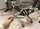
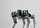
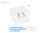

💡 单击图片查看完整图片
力矩控制机器狗，全国大学生机器人大赛ROBOCON项目以及公司创业项目，现处于原型搭建阶段，已完成全向VMC控制移动，展现出良好的稳定性。
在该项目中，本人作为电控和视觉负责人，主导构建了机器狗的力控系统与运动控制架构。
该项目采用先进的力矩控制技术，通过VMC虚拟力模型实现了精确的力控映射。相比传统位置控制，力矩控制能够更好地适应复杂地形，提供更自然的运动表现和更强的抗干扰能力。
机器狗在测试中展现了优秀的力控精度与动态平衡性能，稳定实现了复杂地形下的自适应运动，验证了力控系统的先进性与可靠性。目前项目处于原型优化阶段，正在向商业化方向推进。